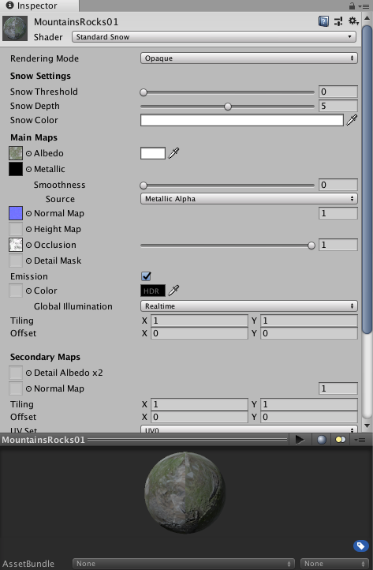
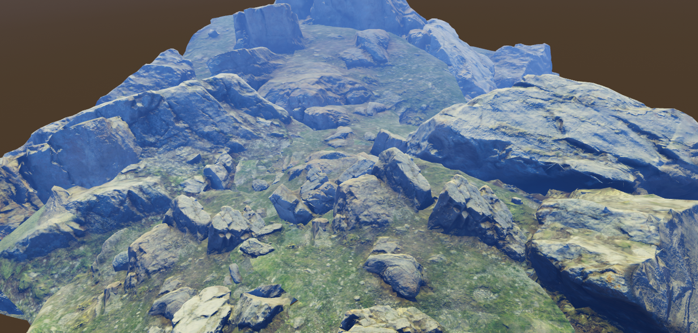
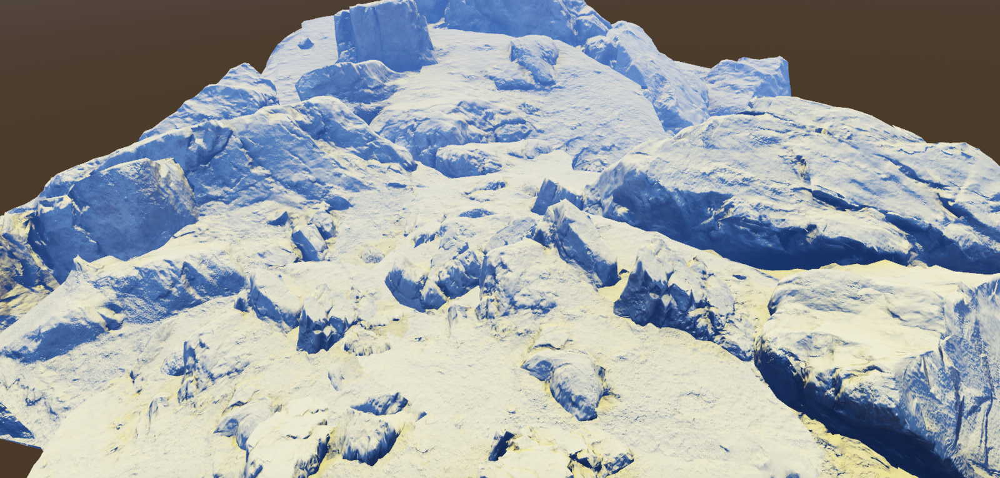

當我們需要對畫面做一些客製化需求
同時又希望保留 Unity PBR 的光照計算時
該如何修改 Standard Shader 就變成一個可探討的議題
在不變動 Unity PBR 的基礎上新增簡單的積雪效果
並將整個修改流程依序記錄下來
StandardShader.shader 中包含兩個 SubShader 用於進行 LOD 切換。
以第一個 Sub Shader 為例，共包含五個 Pass。
Pass 0：正向渲染 (Forward Rendering) 的主光源計算
Pass 1：正向渲染 (Forward Rendering) 的動態光源計算
Pass 2：Shadow Map 的計算
Pass 3：延遲渲染 (Deferred Rendering) 計算
Pass 4：Lightmap 烘焙光照計算
觀察 Standard.shader Pass 0 後不難發現主要的 Shader 實現都被整合在 UnityStandardCoreForward.cginc 中，分別引用了 cginc 內的 vertBase 及 fragBase。
為了實現積雪效果，需要加入三個參數。
_SnowThreashold：積雪影響閥值
_SnowDepth：積雪深度
_SnowColor：積雪顏色
_SnowThreshold("Snow Threshold", Range(0, 1)) = 1
_SnowDepth("Snow Depth", Float) = 1
_SnowColor("Snow Color", Color) = (1,1,1,1)觀察 vertBase 及 fragBase 函式後，會發現分別使用了 vertForwardBase 及 fragForwardBaseInternal 兩個函式，而實際的計算都實作在 UnityStandardCore.cginc。
找到 vertForwardBase 並進行改寫，透過 normalWorld 及閥值計算出頂點的偏移量，用於模擬積雪深度。
fixed snowThreshold = dot(normalWorld, fixed3(0, 1, 0)) - lerp(1, 0, _SnowThreshold);
snowThreshold = saturate(snowThreshold);
o.pos.y -= lerp(0, _SnowDepth, snowThreshold);接著找到 fragForwardBaseInternal 會發現計算都被包裝起來，分析內容後會發現實際的實作在 FragmentSetup 裏。
找到 FragmentSetup 後進行改寫，透過相同的計算取得閥值，並修改顏色。
fixed snowThreshold = dot(o.normalWorld, fixed3(0, 1, 0)) - lerp(1, 0, _SnowThreshold);
snowThreshold = saturate(snowThreshold);
o.diffColor = lerp(o.diffColor, _SnowColor, snowThreshold);在 UnityStandardCore.cginc 中利用 UnityStandardInput.cginc 來定義所使用的參數，需要找到該檔案並加上積雪參數。
half _SnowThreshold;
half _SnowDepth;
half4 _SnowColor;由於 Standard.shader 透過 CustomEditor “StandardShaderGUI” 來客製化編輯器。
所以需要在 StandardShaderGUI.cs 中加入新增的三個參數，才能有效的在 Inspector 面板中新增積雪參數。
MaterialProperty snowThreshold = null;
MaterialProperty snowDepth = null;
MaterialProperty snowColor = null;
snowThreshold = FindProperty("_SnowThreshold", props);
snowDepth = FindProperty("_SnowDepth", props);
snowColor = FindProperty("_SnowColor", props);
GUILayout.Label("Snow Settings", EditorStyles.boldLabel);
snowThreshold.floatValue = EditorGUILayout.Slider("Snow Threshold", snowThreshold.floatValue, 0f, 1f);
snowDepth.floatValue = EditorGUILayout.Slider("Snow Depth", snowDepth.floatValue, 0f, 10f);
snowColor.colorValue = EditorGUILayout.ColorField("Snow Color", snowColor.colorValue);由於直接修改會與預置的 Standard.shader 衝突，所以需要分別進行備份及命名調整。
Standard.shader > StandardSnow.shader
UnityStandardCoreForward.cginc > UnityStandardCoreForwardSnow.cginc
UnityStandardCore.cginc > UnityStandardCoreSnow.cginc
UnityStandardInput.cginc > UnityStandardInputSnow.cginc
StandardShaderGUI.cs > StandardShaderGUISnow.cs

